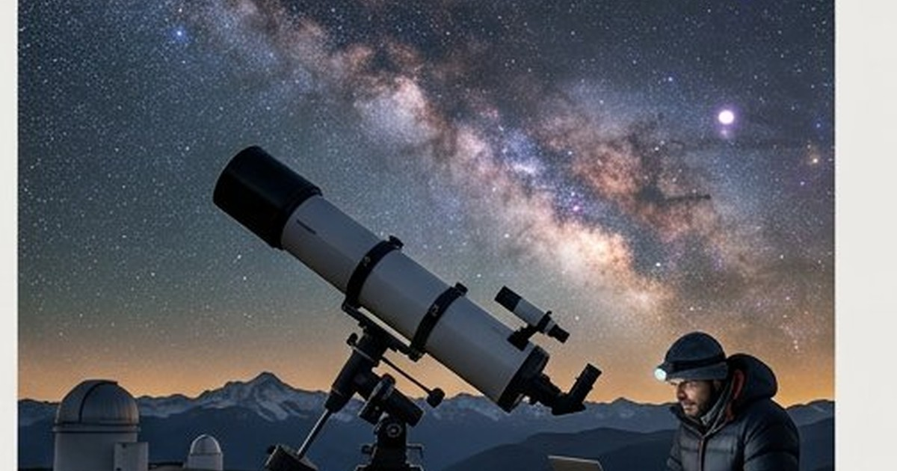

معلومات عامة
كيف يعمل القلب والدورة الدموية والجهاز العصبي بشكل مبسط
شرح مبسط لعمل القلب والعظام والجلد والدماغ والجهاز الهضمي، مع حدود الأرقام الشائعة ومتى تستشير مختصًا.
شرح الفرق بين النجوم والكواكب والمجرات، ومعنى السنة الضوئية، ولماذا نرى ضوء الماضي في السماء.

تقديرات أعداد النجوم والمجرات تتغير مع تحسن الرصد. رؤية جسم بعيد تعني رؤيته كما كان في الماضي لأن الضوء يحتاج وقتًا للوصول.
النجم كرة غاز مضيئة تنتج طاقة في باطنها، والكوكب جرم يدور حول نجم ولا يضيء بذاته مثل النجوم، والمجرة نظام هائل من نجوم وغاز وغبار ومادة مظلمة. النظام الشمسي جزء صغير من مجرة درب التبانة، والسنة الضوئية وحدة مسافة.
النجم جسم يضيء لأن باطنه حار وكثيف بما يكفي لاندماج نووي يحول الهيدروجين إلى هيليوم في معظم عمره. شمسنا نجم متوسط نسبيًا. النجوم تختلف في الكتلة واللون والعمر: الأزرق الحار أقصر عمرًا عمومًا من الأحمر القزم طويل العمر.
ما نسميه «ثقبًا أسود نجميًا» يرتبط بنهاية نجوم ضخمة، وهو موضوع رصدي معقد. لا تستخدم أفلام الخيال كمرجع للمسافات أو السفر.
الكواكب أجرام تدور حول نجوم، ولا تنتج ضوءها بالاندماج النووي كالشمس. نعكس ضوء النجم فنراها. التعريف الدقيق تناقشه الاتحادات الفلكية، وخلاصة عملية للهواة: الكواكب في مجموعتنا ليست نجومًا، وبعضها صخري وبعضها غازي عملاق.
الأقمار تدور حول الكواكب. الكويكبات والمذنبات أجرام أصغر بمدارات ومصادر غبار وغاز مختلفة. التلسكوب الصغير يظهر تفاصيل للقمر والمشتري وزحل أكثر مما يظهر لمجرة بعيدة.
المجرة تجمع هائل من نجوم وسحب غاز وغبار، إضافة إلى مادة لا نراها مباشرة وتُستدل عليها بآثار الجاذبية. درب التبانة مجرتنا، ونحن في إحدى مناطق القرص لا في مركز مزدحم بالثقب الأسود الهائل.
التصنيف الشائع: حلزونية وإهليلجية وغير منتظمة. درب التبانة حلزونية بقضيب. الشكل يخبر عن التاريخ التقريبي من تصادمات وتكوين نجوم، لكنه ليس حكم جمال.
| المفهوم | مقياس تقريبي للفهم |
|---|---|
| القمر | جار قريب؛ الضوء يصل في نحو ثانية وثلث |
| الشمس | ضوءها يصل في نحو ثماني دقائق |
| أقرب النجوم بعد الشمس | سنوات ضوئية، لا أيام |
| مجرة أخرى | ملايين إلى مليارات السنوات الضوئية |
السنة الضوئية هي المسافة التي يقطعها الضوء في سنة، وليست مدة زمنية للاستخدام اليومي. عندما تنظر إلى نجم يبعد مئات السنوات الضوئية، ترى ضوءًا غادره في الماضي. هذا لا يجعل الرصد «آلة زمن» للسفر، لكنه يوضح أن الكون كبير زمنيًا كما هو مكانيًا.
النجوم التي تبدو متجاورة في كوكبة قد تكون على أعماق مختلفة جدًا. الكوكبات أنماط من منظور الأرض، لا عائلات فيزيائية بالضرورة.
لا. الكون أوسع ويضم عددًا هائلًا من المجرات.
عادة نيزك يحترق في الغلاف الجوي. النجوم لا «تسقط» بهذا المعنى اليومي.
المدن تخفي درب التبانة. رحلة قصيرة بعيدًا عن الأنوار تكشف أكثر من تلسكوب في شرفة مضاءة. أطفئ الضوء الأبيض المباشر عند الرصد. احمِ عينيك من الليزر العشوائي نحو السماء والطائرات.
ميّز النجم المضيء بذاته، والكوكب الذي يعكس الضوء، والمجرة التي تضم أنظمة لا تحصى بسهولة. المسافات تُقاس بالسنة الضوئية، وما تراه في السماء البعيدة ضوء ماضٍ يصل الآن.
رُوجعت المعلومات العامة في هذا المقال بالاستناد إلى المصادر التالية. الروابط الخارجية قد تُحدّث محتواها بمرور الوقت.
شرح مبسط لعمل القلب والعظام والجلد والدماغ والجهاز الهضمي، مع حدود الأرقام الشائعة ومتى تستشير مختصًا.

شرح مبسط لأهمية النوم ومراحله والحرمان منه، مع عادات عملية للإيقاع اليومي وحدود النصائح العامة.

تاريخ القهوة في اليمن: الموطن النباتي الأرجح في إثيوبيا، الزراعة والتجارة اليمنية، ودور ميناء المخا في انتشار القهوة عالميًا.